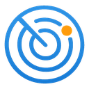

easyRADAR
🛰️
Radar-Level
–
Alle
Airliner
Helikopter
Militär
Business
Propeller
⭐
Favoriten
×
Lade Foto…
—
—
☆
✈️
Route
🛫
Flug
ICAO-Typ
—
Betreiber
—
Registrierung
—
Herkunftsland
—
🎯
Position
Höhe
—
Außentemperatur
—
Steig-/Sinkrate
—
Geschwindigkeit
—
Kurs
—
Entfernung
—
🔧
Technik
Hex-Code
—
Transponder
—
ADS-B Version
—
Quelle
—
🕒
Verlauf
◀
▸
📡 ADS-B
🟢
Online
✈️
0
Flugzeuge
📨
—
msg/s
📍
—
🏷️
—
🕒
Aktualisiert vor
—
Empfänger
Nachrichten/s
—
Verstärkung (Gain)
—
Max. Reichweite
—
MLAT-Anteil (aktuell)
—
Zeitraum
Heute
Insgesamt
Rekorde
Flugzeuge
—
davon Militär
—
Nachrichten
—
Ø Reichweite
—
Ø Flughöhe
—
Höchste Flughöhe
—
Niedrigster Überflug
—
Höchste Geschwindigkeit
—
Weiteste Entfernung
—
Top Flugzeugtypen
Häufigste Rufzeichen
Häufigste Fluggesellschaft
Empfang nach Richtung
Meilensteine
🖥️
Anzeige
Kartendesign
Hell
Dunkel
Geschwindigkeit
km/h
kn
mph
Höhe
m
ft
Reichweite
km
nm
mi
Markergröße
Klein
Mittel
Groß
Beim Start letzte Kartenposition merken
Seitenleiste automatisch zuklappen
Animationen
Flugzeugbilder
Flughäfen
Flugverlauf
Alle Flugverläufe anzeigen
🔔
Benachrichtigungen
Browser-Benachrichtigungen bei neuen Meilensteinen und Militärflugzeugen
📡
Empfang
Empfangsradius
0 km = unbegrenzt
0
500 km
Empfangsradius auf Karte anzeigen
Empfangskontur auf Karte anzeigen
Empfangskontur als Fläche füllen
Aktualisierungsrate
1 s
2 s •
5 s
🛰
Datenquellen
Externe Quelle (adsb.fi)
Sprache